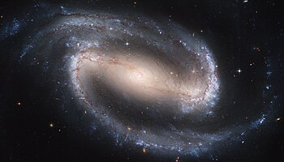

Una galaxia espiral barrada es aquella con una banda central de estrellas brillantes que abarca de un lado a otro de la galaxia. Los brazos espirales parecen surgir del final de la "barra" mientras en las galaxias espirales parecen surgir del núcleo galáctico. Las barras son relativamente comunes: hasta dos tercios de las galaxias espirales contienen una. Dichas barras generalmente afectan tanto al movimiento de las estrellas como al del gas interestelar dentro de la galaxia espiral, y pueden afectar también a los brazos espirales.
Edwin Hubble clasificó a este tipo de galaxias espirales como SB (Spiral Barred en inglés) en su secuencia de Hubble, dividiéndolas en tres categorías dependiendo de lo abiertos que tengan los brazos espirales. Las de tipo SBa tienen los brazos fuertemente unidos y una gran protuberancia central, las galaxias de tipo SBb son intermedias entre las anteriores y las de tipo SBc —las cuales tienen los brazos muy sueltos—, y finalmente las SBd aún más, con un núcleo casi inexistente. Un quinto tipo (SBm) se creó posteriormente para describir una galaxia espiral irregular, como las Nubes de Magallanes, que inicialmente fueron clasificadas como galaxias irregulares pero en donde posteriormente se encontraron estructuras de espirales barradas.

La Vía Láctea es una galaxia de este tipo (tipo SBbc, intermedia entre una SBb y una SBc).